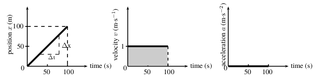

| Units | ~ | Up | ~ | Gravity and Mechanical Energy |
| Frame of reference | |
| Distance and displacement | |
| Time | |
| Velocity and speed | |
| Acceleration | |
| Graphics | |
| Equations with constant acceleration | |
| Exercises |
When we start a calculation we choose a frame of reference.
As the object of study in this chapter is the motion in one dimension,
this frame only define a value '0' (origin) and a positive direction (usually
to the right).
Higher values are on the positive direction and lower values on the negative
one.
In this level (basic) we use the Newtonian concept of time.
Time will be measured in seconds (s)
velocity = Velocity is the rate of change of position.
instantaneous velocity = Instantaneous velocity is the velocity of
a body at a specific instant in time.
| $$v = \frac{\Delta x}{\Delta t} = m \cdot s^{-1}$$ |
$v$ = average velocity
$x$ = desplacement
$t$ = time
It is a vector and its values (positive or negative) must be read as it was indicated for the displacement.
| $$speed = \frac{d}{\Delta t} = m \cdot s^{-1}$$ |
$d$ = distance
$t$ = time
It is a scalar.
Exercise 1
Exercise 2
Exercise 3
Acceleration is the rate of change of velocity.
| $$a = \frac{\Delta v}{\Delta t} = m \cdot s^{-2}$$ |
Since velocity is a vector, acceleration is also a vector.
Acceleration does not give information about velocity direction nor by itself if an object is speeding up or slowing dawn.
In a "one dimension movement" the sign of acceleration and velocity should be interpreted as:
$v+$ and $a+ \Rightarrow$ Movement to right and speeding up
$v+$ and $a- \Rightarrow$ Movement to right and slowing down
$v-$ and $a+ \Rightarrow$ Movement to left and slowing down
$v-$ and $a- \Rightarrow$ Movement to left and speeding up
NOTE: Avoid the use of the term "deceleration" as negative acceleration, because it usually means "slowing down" whereas a negative acceleration can result in a speeded up movement.
$x=2$, $v = 0$, $a = 0$
$x_0=0$, $v = 1$, $a=0$

$x_0=100$, $v = -1$, $a=0$
$x_0=0$, $v_0 = 0$, $a=5$
|
(1) $v_f = v_i + at$ (2) $\Delta x = \dfrac{v_i + v_f}{2}t$ (3) $\Delta x = v_i t + \dfrac{1}{2}at^2$ (4) $v^2_f = v^2_i + 2a\Delta x$ |
where
$v_i =$ initial velocity ($m \cdot s^{-1}$) at $t =$ 0 $s$
$v_f =$ final velocity ($m \cdot s^{-1}$) at time $t$
$\Delta x =$ displacement ($m$)
$t =$ time ($s$)
$\Delta t =$ time interval ($s$)
$a =$ acceleration ($m \cdot s^{-2}$)
$v_f = v_i + \Delta v = v_i + at$
$\Delta x = \bar v t = \dfrac{v_i + v_f}{2}t$
$\Delta x = \dfrac{v_i + v_f}{2}t = \dfrac{v_i + v_i + at}{2}t = \left(\dfrac{\color{red}{2}v_i}{\color{red}{2}} + \dfrac{at}{2}\right)t = v_i t + \dfrac{1}{2}at^2$
$v_f = v_i + at \rightarrow t = \dfrac{v_f - v_i}{a}$
$\Delta x = v_i t + \dfrac{1}{2}at^2
= v_i \left(\dfrac{v_f - v_i}{a}\right)
+ \dfrac{1}{2}a\left(\dfrac{v_f - v_i}{a}\right)^2$
$\Delta x = \dfrac{v_i v_f}{a}-\dfrac{v^2_i}{a}
+ \dfrac{1}{2}a\left(\dfrac{v^2_f-2v_i v_f+v^2_i}{a^2}\right)
= \color{red}{\dfrac{v_i v_f}{a}} -\dfrac{v^2_i}{a}
+ \dfrac{v^2_f}{2a} - \color{red}{\dfrac{v_i v_f}{a}}
+ \dfrac{v^2_i}{2a}$
$2a\Delta x = -2v^2_i + v^2_f+v^2_i$
$v^2_f = v^2_i + 2a\Delta x$
Exercise 5
Exercise 6
Exercise 7
Exercise 8
Exercise 9
Exercise 1
Exercise 2
Exercise 3
Exercise 4
Exercise 5
Exercise 6
Exercise 7
Exercise 8
Exercise 9
Peter walks from home !!x! km. in !!t! minutes. Then he turns around and
walks back along the same path, also in !!t! minutes.
Calculate Peter's average velocity and average speed.
Data:
Walk out: $x_1$ = !!x! km.; $t_1$ = !!t! minutes.
Walk back: $x_2$ = !!x! km.; $t_2$ = !!t! minutes.
Set units:
$x_1 =$ !!x! $\times$ 1000 $=$ !!xm! $m$
$t_1 =$ !!t! $\times$ 60 $=$ !!ts! $s$
$x_2 =$ !!x! $\times$ 1000 $=$ !!xm! $m$
$t_2 =$ !!t! $\times$ 60 $=$ !!ts! $s$
Average velocity:
$\Delta x = x_1 - x_2 =$ !!xt! $m$
$\Delta t = t_1 + t_2 =$ !!tt! $s$
$v = \frac{\displaystyle \Delta x}{\displaystyle \Delta t} =$
!!v! $m \cdot s^{-1}$
Average speed:
$d = x_1 + x_2 =$ !!d! $m$
$speed = \frac{\displaystyle d}{\displaystyle \Delta t}$ =
!!s! $m \cdot s^{-1}$
A man runs around a circular track of radious !!r! $m$. It takes him !!t!
$s$ to complete a revolution of the track. If he runs at constant speed,
calculate:
Data:
$r = $ !!r! $m$
$\Delta t =$ !!t! $s$
1. Average speed:
$d = r \times 2\pi$
$speed = \frac{\displaystyle d}{\displaystyle \Delta t} =
\frac{\displaystyle r \times 2\pi}{\displaystyle \Delta t}$ =
!!speed! $m \cdot s^{-1}$
2. Instantaneous velocity at A:
As man's speed is constant, if instantaneous velocity at point A is
!!speed! $m \cdot s^{-1}$ toward West.
3. Instantaneous velocity at B:
As man's speed is constant, if instantaneous velocity at point B is
!!speed! $m \cdot s^{-1}$ toward South.
4. Average velocity between A and B:
$\Delta x = \sqrt{r^2 + r^2}$
$\Delta t_4 = \frac{\displaystyle \Delta t}{\displaystyle 4}$
$v = \frac{\displaystyle \Delta x}{\displaystyle \Delta t} =
\frac{\displaystyle \sqrt{r^2 + r^2}}{\displaystyle \Delta t_4} =$
!!v! $m \cdot s^{-1}$ toward Southwest.
5. Average velocity after a revolution:
As distance is 0 in this case,
$\Delta x = 0$ $m$ and
$v = \frac{\displaystyle \Delta x}{\displaystyle \Delta t} =$
0.00 $m \cdot s^{-1}$
Two cars run at constat speed along the same road in opposite directions. The car A is at the kilometer !!ap! and runs at !!av! $km/h$ and the car B is at the kilometer !!bp! and runs at !!bv! $km/h$.
With these data calculate:
Data:
$x_A=$!!ap! $km = $ !!ap! $\times$ 1000 $=$ !!apm! $m$
$v_A=$!!av! $km \cdot h^{-1} = $ !!av! / 3.6 $=$ !!avm! $m \cdot s^{-1}$
$x_B=$!!bp! $km = $ !!bp! $\times$ 1000 $=$ !!bpm! $m$
$v_B=$!!av! $km \cdot h^{-1} = $ !!bv! / 3.6 $=$ !!bvm! $m \cdot s^{-1}$
Formulation:
$d = x_B - x_A = $ !!dm! $m$
$\Delta t = \frac{\displaystyle d}{\displaystyle speed} \rightarrow
\frac{\displaystyle {d_A}}{\displaystyle s_A} =
\frac{\displaystyle {d_B}}{\displaystyle s_B}$
; cars have to cross at the same time.
$d = d_A + d_B \rightarrow d_B = d - d_A$
$\frac{\displaystyle {d_A}}{\displaystyle s_A} =
\frac{\displaystyle {d - d_A}}{\displaystyle s_B} \rightarrow
\frac{\displaystyle s_B}{\displaystyle s_A} d_A = d - d_A$
$d = d_A + \frac{\displaystyle s_B}{\displaystyle s_A} d_A =
d_A (1 + \frac{\displaystyle s_B}{\displaystyle s_A})$
$d_A = \frac{\displaystyle d}{\displaystyle 1 + s_B / s_A} = $
!!ad! $m$
$d_B = \frac{\displaystyle d}{\displaystyle 1 + s_A / s_B} = $
!!bd! $m$ ; formulated in the same way as $d_A$.
Road cross point:
$x = x_A + d_A =$ !!x1! $m$ or
$x = x_B - d_B =$ !!x2! $m$
Cross time:
$t = \frac{\displaystyle d_A}{\displaystyle s_A} =$ !!t1! $s$ or
$t = \frac{\displaystyle d_B}{\displaystyle s_B} =$ !!t2! $s$
An airplane accelerates uniformly from an initial velocity of !!v1! $m \cdot s^{-1}$ to a velocity of !!v2! $m \cdot s^{-1}$ in !!t1! seconds. Then it accelerates uniformly to a final velocity of !!v3! $m \cdot s^{-1}$ in !!t2! seconds. Let the direction of motion be the positive direction.
Data:
$v_1 =$ !!v1! $m \cdot s^{-1}$
$v_2 =$ !!v2! $m \cdot s^{-1}$
$v_3 =$ !!v3! $m \cdot s^{-1}$
$t_1 =$ !!t1! $s$
$t_2 =$ !!t2! $s$
$t_T =$ !!tt! $s$
$t_3 =$ !!t3! $s$
Acceleration during the first !!t1! seconds:
$\Delta v = v_2 - v_1 = $ !!dv1! $m \cdot s^{-1}$
$\Delta t = t_1 = $ !!t1! $s$
$a_1 = \frac{\displaystyle \Delta v}{\displaystyle \Delta t} =$
!!a1! $m \cdot s^{-2}$
Acceleration during the next !!t2! seconds:
$\Delta v = v_3 - v_2 = $ !!dv2! $m \cdot s^{-1}$
$\Delta t = t_2 = $ !!t2! $s$
$a_2 = \frac{\displaystyle \Delta v}{\displaystyle \Delta t} =$
!!a2! $m \cdot s^{-2}$
Acceleration during the whole !!tt! seconds:
$\Delta v = v_3 - v_1 = $ !!dv3! $m \cdot s^{-1}$
$\Delta t = t_T =$ !!tt! $s$
$a_W = \frac{\displaystyle \Delta v}{\displaystyle \Delta t} =$
!!a3! $m \cdot s^{-2}$
Acceleration during the first !!t3! seconds:
$\Delta t_0 = t_3 - t_1 =$ !!t0! $s$
$\Delta v_0 = a_2 \times \Delta t_0 =$ !!dv0! $m \cdot s^{-1}$
$v_0 = v_2 + \Delta v_0 =$ !!v4! $m \cdot s^{-1}$
$\Delta v = v_0 - v_1 = $ !!dv4! $m \cdot s^{-1}$
$\Delta t = t_3 = $ !!t3! $s$
$a = \frac{\displaystyle \Delta v}{\displaystyle \Delta t} =$
!!a4! $m \cdot s^{-2}$
A car starts off at !!v0! $m \cdot s^{-1}$ and accelerates at !!a! $m \cdot s^{-2}$ for 10 s. What is its final velocity?
####
Data:
$v_i =$ !!v0! $m \cdot s^{-1}$
$a =$ !!a! $m \cdot s^{-2}$
$t =$ !!t! $s$
$v_f =$ ? $m \cdot s^{-1}$
Calculus:
$v_f = v_i + at =$ !!vf! $m \cdot s^{-1}$
A train starts from rest, and accelerates at !!a! $m \cdot s^{-2}$ for !!t! $s$. How far does it move?
####
Data:
$a =$ !!a! $m \cdot s^{-2}$
$t =$ !!t! $s$
$v_i=$ 0 $m \cdot s^{-1}$
$\Delta x=$ ? $m$
Calculus:
$\Delta x= v_i t + \dfrac{1}{2} at^2 =$ !!x! $m$
A bus is going !!v! $m \cdot s^{-1}$ and stops in !!t! $s$. What is its stopping distance for this speed?
####
Data:
$v=$ !!v! $m \cdot s^{-1}$
$t =$ !!t! $s$
$\Delta x=$ ? $m$
Calculus:
$\Delta x= v t =$ !!x! $m$
A motorcycle has a uniform acceleration of !!a! $m \cdot s^{-2}$ . Assume the motorcycle has an initial velocity of !!vi! $m \cdot s^{-1}$ . Determine the velocity and displacement at the end of !!t! s.
####
Data:
$a=$ !!a! $m \cdot s^{-2}$
$v_i=$ !!vi! $m \cdot s^{-1}$
$t =$ !!t! $s$
$v_f =$ ? $m \cdot s^{-1}$
$\Delta x =$ ? $m$
Calculus of $v_f$ :
$v_f = v_i + a t =$ !!vf! $m \cdot s^{-1}$
Calculus of $\Delta x$ :
(1) $\Delta x = \dfrac {v_i + v_f}{2} t =$ !!xA! $m$
(2) $\Delta x = v_i t + \dfrac {1}{2} a t =$ !!xB! $m$
A truck is travelling at a constant velocity of !!vi! $m \cdot s^{-1}$ when the driver sees a child !!xc! $m$ in front of him in the road. He hits the brakes to stop the truck. The truck accelerates at a rate of !!a! $m \cdot s^{-2}$ . His reaction time to hit the brakes is !!t! seconds. Will the truck hit the child?
####
Data:
$v_i=$ !!vi! $m \cdot s^{-1}$
$x_C =$ !!xc! $m$
$a =$ !!a! $m \cdot s^{-2}$
$t =$ !!t! $s$
Calculus of travelled distance before hitting brackes:
$\Delta x_1 = v_i t = $ !!x1! $m$
Calculus of travelled distance until slowing down to 0:
$v^2_f = v^2_i + 2a\Delta x_2 \rightarrow
\Delta x_2 = \dfrac {v^2_f - v^2_i}{2a} =$ !!x2! $m$
Calculus of total distance:
$\Delta x_T = \Delta x_1 + \Delta x_2 = $ !!xt! $m$
The truck will !!r! hit the child.